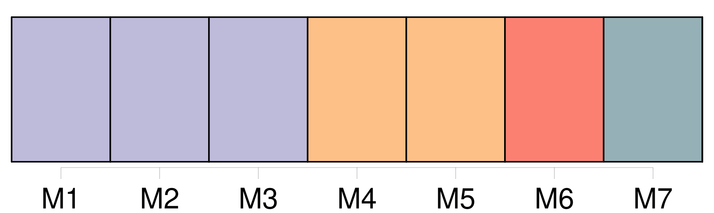
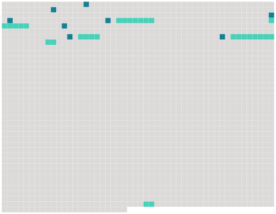

Longueur nb maillons : 14 mentions |
 |
Après avoir visité Bône, Constantine, Biskra et Sétif, je suis venu à [Bougie] par les gorges du Chabet, et une incomparable route au milieu des forêts kabyles, qui suit la mer en la dominant de deux cents mètres, et serpente selon les testons delà haute montagne, jusqu'à ce merveilleux golfe de [Bougie] aussi beau que celui de Naples, que celui d'Ajaccio et que celui de Douarnenez, les plus admirables que je connaisse. [1 phrases] De loin, de très loin, avant de contourner le grand bassin où dort l'eau pacifique, on aperçoit [Bougie] [Elle] est bâtie sur les flancs rapides d'un mont très élevé et couronné par des bois.
[C'] est [une tache blanche dans cette pente verte] ; on dirait l'écume d'une cascade tombant à la mer. Dès que j'eus mis le pied dans [cette toute petite et ravissante ville] , je compris que j'allais [y] rester longtemps. [3 phrases] [Bougie] est [la ville des ruines] [1 phrases] [C'] est [la vieille porte Sarrasine, envahie de lierre]
Et dans les bois montueux autour de [la cité] , partout des ruines, des pans de murailles romaines, des morceaux de monuments sarrasins, des restes de constructions arabes. [68 phrases]
Quand la grande lune illuminante des pays chauds s'étalait en plein dans le ciel, éclairant [la ville] et le golfe avec son cadre arrondi de montagnes, nous apercevions alors sur toutes les autres terrasses comme une armée de silencieux fantômes étendus qui parfois se levaient, changeaient de place, et se recouchaient sous la tiédeur langoureuse du ciel apaisé. |
 |
Il est possible de télécharger la ressource sur la page Ortolang |
Si vous avez des questions ou vous voyez des erreurs, merci d'envoyer un mail à silvia.federzoni89@gmail.com |